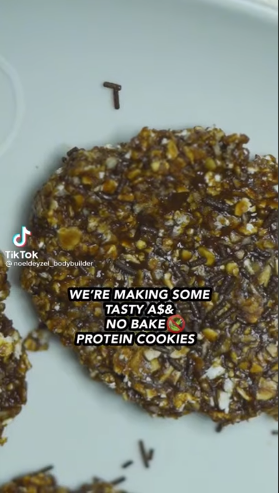

Noel Deyzel's no-bake protein cookies

This recipe is a tutorial on how to make Noel Deyzel's no-bake protein cookies. These are the best cookies I have ever had, and they are no-bake too,
meaning you can make them alongside regular cookies. These cookies do get messy though, you should bring some napkins when eating these.
Ingredients
- 2 scoops of protein powder of choice
- 200 grams of oats
- 1/4 cup milk of choice
- 120 grams of natural peanutbutter
- 1/2 cup of low calorie maple syrup
- 1 tsp of vanilla extract
- 1/3tsp of salt
- 2 TBSP of cocoa powder
Steps
- For the first step, you need a bowl, and add your oats and protein powder of choice.
- Add all the other ingredients to a pot and stir on medium to low heat.
- Once you are done stirring, pour onto the oat and protein powder mix and mix.
- Once you have your batter, let them rest in the fridge for 10 minutes.
- Take your batter out, and spoon the batter on to a baking sheet with parchment paper.
- Put it in the freezer and wait atleast 10 minutes.
Your protein cookies are now done. Enjoy!
Back to home page